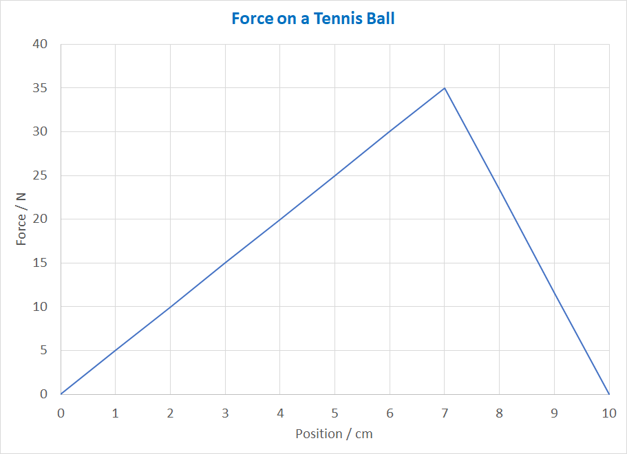

Work-Energy Theorem
We saw in the last lesson that the amount of mechanical energy that a force transforms is called the work done.
An important Physics concepts is the Work-Energy Theorem, which allows us to calculate work using this equation:
$$W=\Delta E_k=\vec{\mathbf{F}}\cdot\Delta\vec{\mathbf{d}}$$
- If you were to push an object 2.0 metres by applying a force of 10 newtons in the same direction that it is moving, you would be doing 20 joules of work.
- If this happened in deep space where there were no other forces acting, the object would gain 20 joules of kinetic energy.
- On Earth, we would need to account for the work being done by gravity, friction, and any other forces before we could say how much kinetic energy was gained.
Example 1
The kinetic energy of a wagon increases from 10 J to 25 J as a student pulls it 3.0 metres. How much force is the student applying?
Calculate how much work was done:$$W=\Delta E_k= \mathrm{25\ J - 10\ J = 15\ J}$$
Rearrange the equation to find force: $$W = \vec{\mathbf{F}}\cdot\Delta\vec{\mathbf{d}}$$
$$\vec{\mathbf F} = {W \over \Delta\vec{\mathbf d}} = \mathrm{{15\ J\over 3.0\ m} = 5.0\ N}$$
- This answer assumes that there are no other forces affecting the energy.
- If the wagon is on a hill, or if there is friction or air resistance, the answer would be different.
Force Not Constant?
Using the work-energy equation requires a constant amount of force:$$W = \vec{\mathbf{F}}\cdot\Delta\vec{\mathbf{d}}$$
- If the force is not constant, we can calculate work as the area under a graph of \(\vec{\mathbf F}\) vs \(\vec{\mathbf d}\).
- This calculation effectively averages the force. (Examples p155-156.)
Example 2
When a tennis racket hits a ball, the force increases as the racket strings stretch, and then decreases as the unstretch. How much work does the racket do on the ball?
